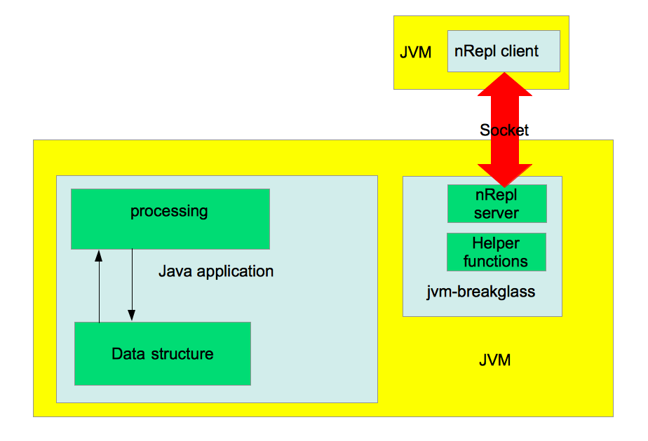
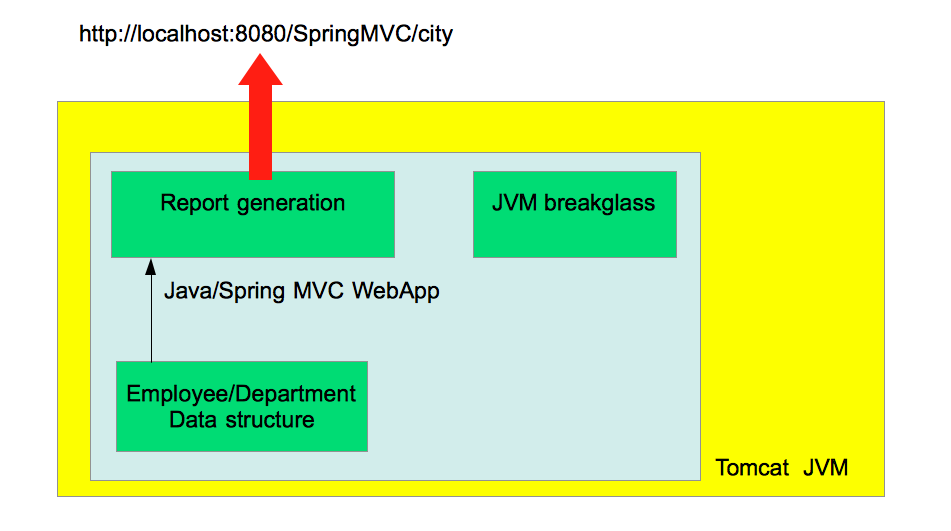

JVM breakglass
Using a Clojure REPL to troubleshoot live Java/JVM processes
 Author:
Mathieu Gauthron
http://slides-euroclojure2014.matlux.net/
Author:
Mathieu Gauthron
http://slides-euroclojure2014.matlux.net/
Agenda
- Traditional troubleshooting of a Java application
- What is JVM-breakglass?
- How does JVM-breakglass work?
- How to integrate it in an application?
- Live Debugging demo
Troubleshooting a Java application
- Debugger
- Log/print statements
- JMX
- Adhoc interactive mechanism
What is JVM-breakglass?
- Open Source Maven Library
- Integrated on any JVM process
- Console onto a JVM process
What are the main JVM-breakglass features?
- Interactive prompt
- See inside private members
- Call arbitrary methods
- Creation of new object instances
- Creation of new classes
- Monitor object state
- No need to use Clojure to develop the application
How does it work?

Time for a...

Enterprise Application Diagram

Let's take a step back
- Interactive prompt
- Full JVM introspection
- Access private/public members, methods, fields...
- Call arbitrary methods
- Monitor object state
- Creation of new object instances
- Overwrite class definition on the fly
- No Clojure inside the Java project